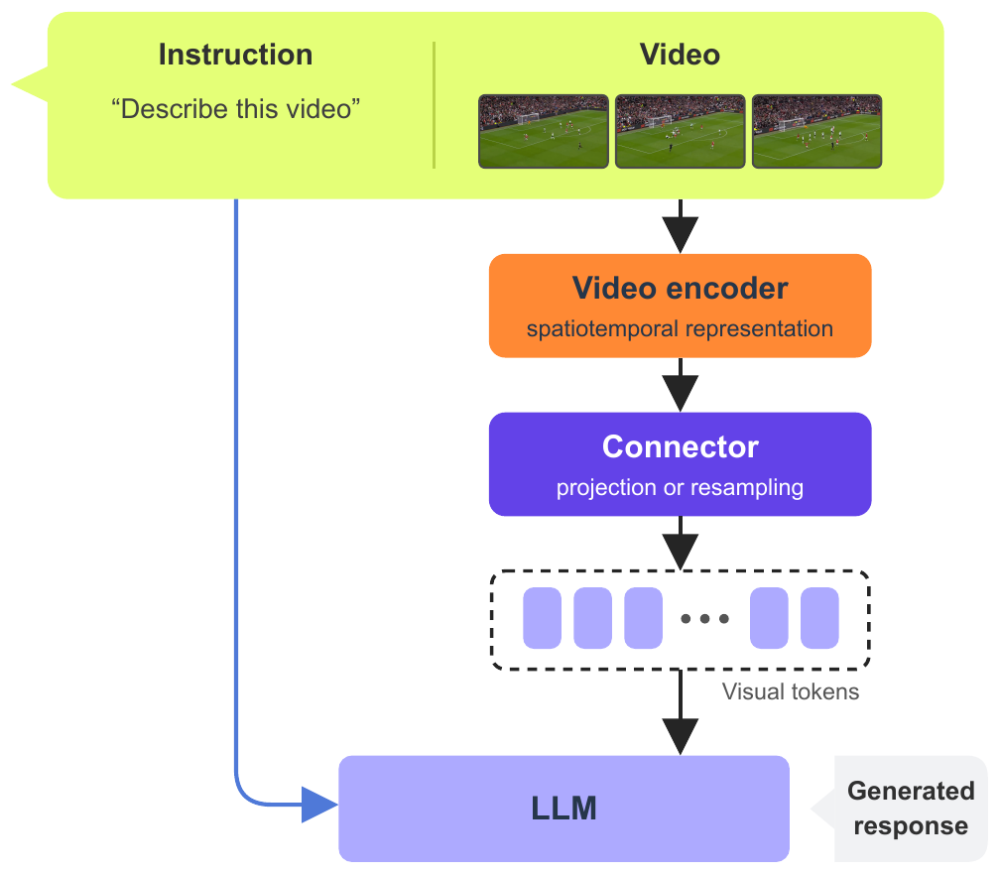
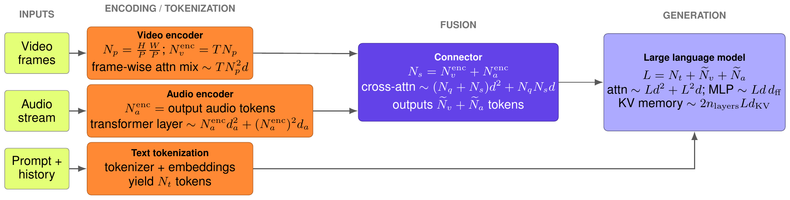
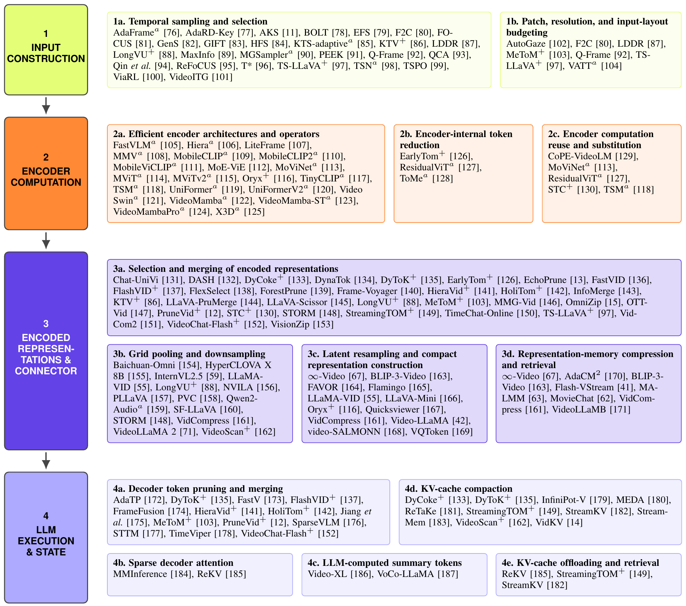
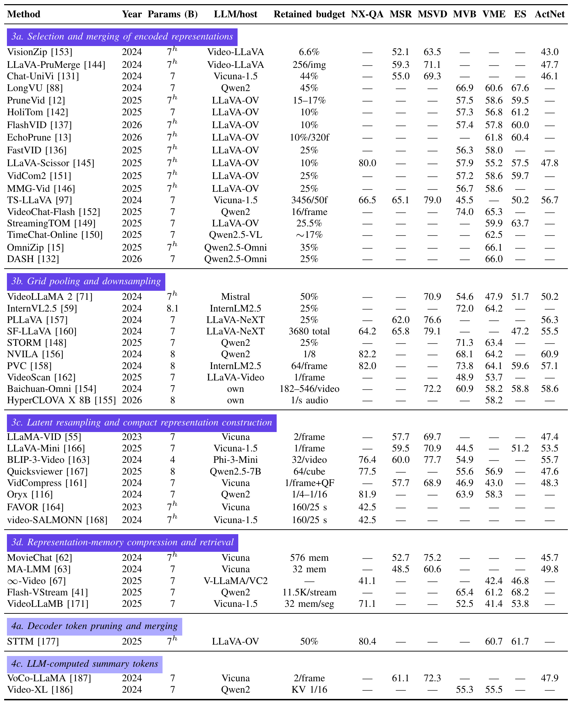
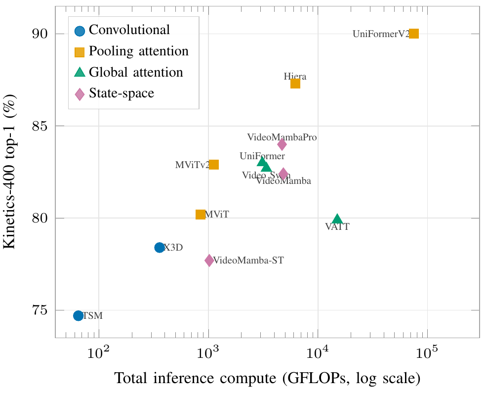

Why Is Video Still So Expensive?
A Survey of Inference-Efficiency Mechanisms in Video and Audiovisual LLMs
News
- Sep 2026 — Preprint released on arXiv, together with the companion awesome-efficient-videollm repository listing every surveyed method.
Screened from several hundred candidates, read in full, and placed in a single taxonomy covering methods up to August 2026.
Every mechanism is assigned to the stage whose computation it removes: input construction, encoder, connector, or LLM execution and state.
Literature-reported accuracy–cost results, with shared-host, shared-protocol comparisons kept separate from heterogeneous cross-paper numbers.
Abstract
Video understanding has rapidly evolved toward video large language models (VideoLLMs): systems that couple video representations with pretrained large language models and condition generation on a textual prompt. Their strong performance on captioning, question answering, retrieval and temporal grounding comes at a computation and memory cost that grows with frame count and context length, limiting deployment in real-time, mobile and resource-constrained settings. This survey covers inference-efficiency mechanisms for visual and audiovisual VideoLLMs that report concrete reductions in parameter count, FLOPs per input, latency, memory, or visual and audio token count. We analyze bottlenecks across frame sampling, modality encoding, connector-level token reduction, and LLM prefilling and decoding. We organize methods by the pipeline stage at which they act, covering VideoLLMs developed since late 2022 together with earlier frame-sampling and vision-encoder mechanisms that remain components of current pipelines. We assemble literature-reported accuracy–cost comparisons under shared host models and input protocols wherever available, distinguish them from heterogeneous cross-paper evidence, and identify gaps in audiovisual efficiency and standardized evaluation. We maintain a repository at github.com/momentslab/awesome-efficient-videollm.
The pipeline and where cost goes

We scope the survey to the encoder–connector–LLM family: a video encoder turns sampled frames into continuous features, a connector projects or compresses them into LLM token space, and the LLM conditions on them together with a textual prompt.

Token and compute scaling across the pipeline. Frame count and resolution set encoder cost and the number of modality tokens; connector compression controls how many of them reach the LLM; the resulting context length sets prefilling cost and KV-cache memory.

The full taxonomy: every surveyed method, placed at the stage whose computation it removes. Methods that reduce cost at several stages appear at each of them.
Comparisons

Representation reduction before and within the LLM. Reported metrics grouped by operation family. Hosts, inputs and protocols differ, so these rows are indicative of what each budget buys, and they do not rank methods.

Encoder accuracy versus compute. Reported Kinetics-400 top-1 against per-view GFLOPs times evaluation views. Pooling-attention transformers span the widest range and reach the highest accuracies; the plot is illustrative, since training data and test protocols differ.
Takeaways
- Efficiency is a system-level trade-off. Gains must be read together with semantic performance, input coverage, compute, latency and memory.
- Fixing one stage moves the bottleneck. Once LLM prefilling and cache costs are reduced, vision encoding becomes the limiting stage.
- Saved compute is often reinvested. In video, cheaper tokens usually mean more frames, so a reported speed-up has to be interpreted alongside temporal coverage and the cost of encoding those extra frames.
- Comparison is the open problem. Progress needs a reproducible accuracy-compute protocol with common backbones, inputs and FLOP-accounting boundaries, complemented by system measurements on a shared reference stack.
- Audio is the underexplored lever. Learned audiovisual allocation is a promising avenue: audio is widely available in video, yet barely represented in the efficiency literature.
A living companion repository
We maintain and keep up to date a companion repository at awesome-efficient-videollm, which mirrors the taxonomy above and is built to be extended: each method is one row, tagged with the pipeline stage it acts on. If we missed your method, or you publish a new one, we would be happy to include it! Adding an entry should take a couple of minutes, and the repository is meant to stay current long after the paper does not.
Contribute a methodBibTeX
@article{steunou2026video,
title={Why Is Video Still So Expensive? A Survey of Inference-Efficiency Mechanisms in Video and Audiovisual LLMs},
author={Steunou, Killian and Tevissen, Yannis and El-Yacoubi, Moun{\^i}m A.},
journal={arXiv preprint arXiv:2609.10355},
year={2026},
url={https://arxiv.org/abs/2609.10355}
}